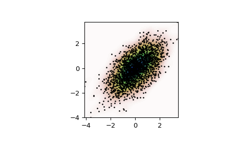

scipy.stats.gaussian_kde¶
-
class
scipy.stats.gaussian_kde(dataset, bw_method=None, weights=None)[source]¶ Representation of a kernel-density estimate using Gaussian kernels.
Kernel density estimation is a way to estimate the probability density function (PDF) of a random variable in a non-parametric way.
gaussian_kdeworks for both uni-variate and multi-variate data. It includes automatic bandwidth determination. The estimation works best for a unimodal distribution; bimodal or multi-modal distributions tend to be oversmoothed.- Parameters
- datasetarray_like
Datapoints to estimate from. In case of univariate data this is a 1-D array, otherwise a 2-D array with shape (# of dims, # of data).
- bw_methodstr, scalar or callable, optional
The method used to calculate the estimator bandwidth. This can be ‘scott’, ‘silverman’, a scalar constant or a callable. If a scalar, this will be used directly as kde.factor. If a callable, it should take a
gaussian_kdeinstance as only parameter and return a scalar. If None (default), ‘scott’ is used. See Notes for more details.- weightsarray_like, optional
weights of datapoints. This must be the same shape as dataset. If None (default), the samples are assumed to be equally weighted
Notes
Bandwidth selection strongly influences the estimate obtained from the KDE (much more so than the actual shape of the kernel). Bandwidth selection can be done by a “rule of thumb”, by cross-validation, by “plug-in methods” or by other means; see [Ra3a8695506c7-3], [Ra3a8695506c7-4] for reviews.
gaussian_kdeuses a rule of thumb, the default is Scott’s Rule.Scott’s Rule [Ra3a8695506c7-1], implemented as
scotts_factor, is:n**(-1./(d+4)),
with
nthe number of data points anddthe number of dimensions. In the case of unequally weighted points,scotts_factorbecomes:neff**(-1./(d+4)),
with
neffthe effective number of datapoints. Silverman’s Rule [Ra3a8695506c7-2], implemented assilverman_factor, is:(n * (d + 2) / 4.)**(-1. / (d + 4)).
or in the case of unequally weighted points:
(neff * (d + 2) / 4.)**(-1. / (d + 4)).
Good general descriptions of kernel density estimation can be found in [Ra3a8695506c7-1] and [Ra3a8695506c7-2], the mathematics for this multi-dimensional implementation can be found in [Ra3a8695506c7-1].
With a set of weighted samples, the effective number of datapoints
neffis defined by:neff = sum(weights)^2 / sum(weights^2)
as detailed in [Ra3a8695506c7-5].
References
- Ra3a8695506c7-1(1,2,3)
D.W. Scott, “Multivariate Density Estimation: Theory, Practice, and Visualization”, John Wiley & Sons, New York, Chicester, 1992.
- Ra3a8695506c7-2(1,2)
B.W. Silverman, “Density Estimation for Statistics and Data Analysis”, Vol. 26, Monographs on Statistics and Applied Probability, Chapman and Hall, London, 1986.
- Ra3a8695506c7-3
B.A. Turlach, “Bandwidth Selection in Kernel Density Estimation: A Review”, CORE and Institut de Statistique, Vol. 19, pp. 1-33, 1993.
- Ra3a8695506c7-4
D.M. Bashtannyk and R.J. Hyndman, “Bandwidth selection for kernel conditional density estimation”, Computational Statistics & Data Analysis, Vol. 36, pp. 279-298, 2001.
- Ra3a8695506c7-5
Gray P. G., 1969, Journal of the Royal Statistical Society. Series A (General), 132, 272
Examples
Generate some random two-dimensional data:
>>> from scipy import stats >>> def measure(n): ... "Measurement model, return two coupled measurements." ... m1 = np.random.normal(size=n) ... m2 = np.random.normal(scale=0.5, size=n) ... return m1+m2, m1-m2
>>> m1, m2 = measure(2000) >>> xmin = m1.min() >>> xmax = m1.max() >>> ymin = m2.min() >>> ymax = m2.max()
Perform a kernel density estimate on the data:
>>> X, Y = np.mgrid[xmin:xmax:100j, ymin:ymax:100j] >>> positions = np.vstack([X.ravel(), Y.ravel()]) >>> values = np.vstack([m1, m2]) >>> kernel = stats.gaussian_kde(values) >>> Z = np.reshape(kernel(positions).T, X.shape)
Plot the results:
>>> import matplotlib.pyplot as plt >>> fig, ax = plt.subplots() >>> ax.imshow(np.rot90(Z), cmap=plt.cm.gist_earth_r, ... extent=[xmin, xmax, ymin, ymax]) >>> ax.plot(m1, m2, 'k.', markersize=2) >>> ax.set_xlim([xmin, xmax]) >>> ax.set_ylim([ymin, ymax]) >>> plt.show()
- Attributes
- datasetndarray
The dataset with which
gaussian_kdewas initialized.- dint
Number of dimensions.
- nint
Number of datapoints.
- neffint
Effective number of datapoints.
New in version 1.2.0.
- factorfloat
The bandwidth factor, obtained from kde.covariance_factor, with which the covariance matrix is multiplied.
- covariancendarray
The covariance matrix of dataset, scaled by the calculated bandwidth (kde.factor).
- inv_covndarray
The inverse of covariance.
Methods
evaluate(points)Evaluate the estimated pdf on a set of points.
__call__(points)Evaluate the estimated pdf on a set of points.
integrate_gaussian(mean, cov)Multiply estimated density by a multivariate Gaussian and integrate over the whole space.
integrate_box_1d(low, high)Computes the integral of a 1D pdf between two bounds.
integrate_box(low_bounds, high_bounds[, maxpts])Computes the integral of a pdf over a rectangular interval.
integrate_kde(other)Computes the integral of the product of this kernel density estimate with another.
pdf(x)Evaluate the estimated pdf on a provided set of points.
logpdf(x)Evaluate the log of the estimated pdf on a provided set of points.
resample([size, seed])Randomly sample a dataset from the estimated pdf.
set_bandwidth([bw_method])Compute the estimator bandwidth with given method.
Computes the coefficient (kde.factor) that multiplies the data covariance matrix to obtain the kernel covariance matrix.